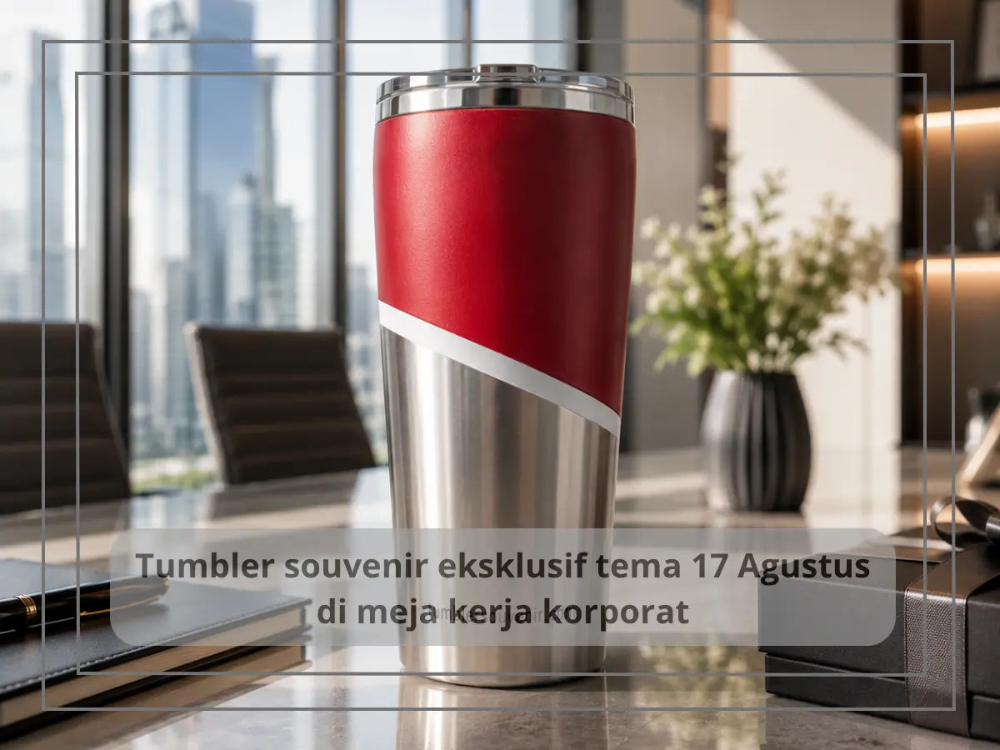
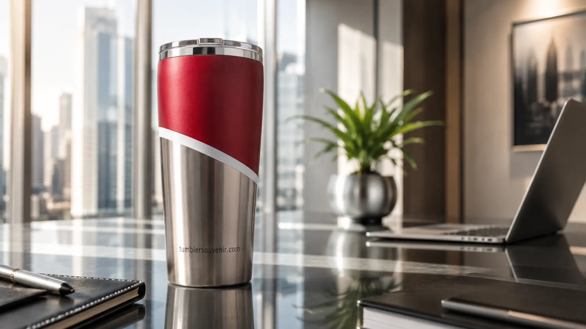

Tumbler Souvenir 17 Agustus Eksklusif untuk Acara Kemerdekaan
Ringkasan
Tumbler souvenir 17 Agustus adalah tumbler custom bertema merah putih dan kemerdekaan yang dirancang khusus sebagai hadiah HUT RI untuk karyawan, klien, atau mitra bisnis. Produk ini menggabungkan nilai nasionalisme dengan fungsi harian, sehingga lebih diingat dibanding souvenir konvensional. tumblersouvenir.com menyediakan desain eksklusif, custom logo, dan pengerjaan cepat menjelang momen kemerdekaan.
- Tumbler tema 17 Agustus cocok untuk hadiah internal kantor maupun eksternal ke klien dan mitra.
- Desain dapat dipersonalisasi dengan logo perusahaan, warna merah putih, dan elemen khas kemerdekaan.
- Material stainless steel food grade menjaga kualitas minum tetap awet dan aman digunakan setiap hari.
- Pemesanan sebaiknya dilakukan jauh sebelum Agustus untuk menghindari antrean produksi musiman.
- tumblersouvenir.com melayani custom desain dan pemesanan dalam jumlah besar untuk kebutuhan korporat.
Daftar Isi
Apa Itu Tumbler Souvenir 17 Agustus?
Tumbler souvenir 17 Agustus adalah produk tumbler yang didesain khusus dengan nuansa merah putih, elemen kemerdekaan, dan sentuhan custom identitas perusahaan untuk dijadikan hadiah pada momen HUT Republik Indonesia. Produk ini berbeda dari tumbler biasa karena dirancang dengan tema yang relevan dengan semangat kebangsaan, sehingga lebih bermakna ketika dibagikan kepada karyawan maupun relasi bisnis.
Konsep ini populer di kalangan perusahaan, instansi pemerintah, dan organisasi yang ingin merayakan HUT RI dengan cara yang praktis namun tetap berkesan. Alih-alih memberikan parsel atau merchandise generik, tumbler bertema kemerdekaan memberikan nilai fungsional jangka panjang karena digunakan setiap hari oleh penerimanya.
Elemen desain yang umum digunakan meliputi warna merah dan putih dominan, motif Garuda atau bendera secara elegan (tanpa berlebihan), tipografi bertema "Dirgahayu Indonesia", serta ruang khusus untuk logo perusahaan pemesan. Kombinasi ini menjadikan tumbler sebagai media branding sekaligus simbol perayaan nasional.
Mengapa Tumbler Cocok Dijadikan Souvenir HUT RI?
Tumbler dipilih sebagai souvenir HUT RI karena tingkat penggunaannya yang tinggi dan daya tahan produknya. Berbeda dengan souvenir sekali pakai, tumbler terus digunakan oleh penerima dalam aktivitas harian, baik di kantor, saat perjalanan, maupun di rumah, sehingga nama dan logo perusahaan pemberi tetap terlihat dalam jangka panjang.

Selain itu, tumbler dianggap sebagai hadiah yang universal dan tidak bias gender, usia, maupun jabatan, sehingga aman dibagikan ke seluruh karyawan lintas divisi maupun ke klien dari berbagai latar belakang. Faktor kepraktisan ini membuat tumbler lebih efisien secara anggaran dibanding kombinasi banyak jenis souvenir berbeda.
Dari sisi persepsi, produk yang mendukung gaya hidup rendah plastik seperti tumbler juga memberikan citra positif bagi perusahaan pemberi, karena dianggap peduli terhadap keberlanjutan lingkungan sekaligus merayakan semangat kemerdekaan dengan cara yang relevan bagi gaya hidup modern.
Apa Saja Keunggulan Tumbler Custom Tema Kemerdekaan?
Keunggulan utama tumbler custom tema kemerdekaan terletak pada kombinasi antara nilai emosional perayaan HUT RI dan fungsi praktis produk sehari-hari, ditambah fleksibilitas desain yang bisa disesuaikan penuh dengan identitas perusahaan.
Beberapa keunggulan spesifik yang membedakan tumbler custom dari souvenir generik antara lain:
- Personalisasi penuh pada warna, logo, dan pesan singkat perusahaan.
- Material stainless steel yang menjaga suhu minuman dan tahan lama digunakan bertahun-tahun.
- Desain eksklusif tema kemerdekaan yang tidak pasaran dibanding stok souvenir umum di pasaran.
- Kesan profesional sekaligus hangat, cocok untuk hadiah internal maupun eksternal.
- Fleksibilitas kuantitas pemesanan, baik untuk kebutuhan puluhan hingga ribuan unit.
Bagi perusahaan yang ingin memberikan kesan berbeda dibanding kompetitor pada momen HUT RI, tumbler custom menjadi pilihan yang menonjolkan kreativitas sekaligus konsistensi branding.
Bagaimana Cara Memilih Desain Tumbler yang Tepat untuk HUT RI?
Memilih desain tumbler yang tepat untuk HUT RI sebaiknya mempertimbangkan keseimbangan antara elemen tema kemerdekaan dan identitas visual perusahaan agar hasil akhir tetap elegan dan tidak berlebihan.
Beberapa pertimbangan yang umum digunakan dalam proses desain meliputi pemilihan warna dasar merah, putih, atau kombinasi netral seperti hitam dan emas untuk kesan premium; penempatan logo perusahaan pada posisi yang tidak mengganggu elemen tema kemerdekaan; serta pemilihan tipografi yang mudah dibaca namun tetap terasa istimewa.
Perusahaan juga dapat menambahkan pesan singkat seperti ucapan Dirgahayu atau tagline internal perusahaan pada bagian tumbler, sehingga produk terasa lebih personal ketika diterima oleh karyawan maupun mitra bisnis.
Apa Saja Kesalahan Umum dalam Memesan Souvenir HUT RI?
Kesalahan umum dalam memesan souvenir HUT RI biasanya berkaitan dengan waktu pemesanan yang terlalu mepet, minimnya personalisasi produk, dan kurangnya pertimbangan terhadap kualitas material jangka panjang.
Beberapa kesalahan yang sering terjadi antara lain:
- Memesan mendekati tanggal 17 Agustus sehingga waktu produksi dan pengiriman menjadi terburu-buru.
- Menggunakan desain generik tanpa sentuhan identitas perusahaan sehingga kesan personalisasi hilang.
- Memilih material berkualitas rendah yang cepat rusak sehingga kesan yang diberikan justru kurang baik.
- Tidak memperhitungkan jumlah kebutuhan secara akurat sehingga terjadi kekurangan atau kelebihan stok.
Menghindari kesalahan ini penting agar souvenir yang dibagikan benar-benar memberikan kesan positif dan mendukung citra perusahaan di mata karyawan maupun relasi bisnis.
Tips Praktis Sebelum Memesan Tumbler Souvenir Tema Kemerdekaan
Beberapa tips praktis sebelum memesan tumbler souvenir tema kemerdekaan meliputi:
- Tentukan lebih dulu jumlah kebutuhan berdasarkan data karyawan atau daftar relasi bisnis yang akan menerima souvenir.
- Siapkan logo perusahaan dalam format vektor agar hasil cetak atau ukir lebih presisi.
- Diskusikan konsep desain dengan tim internal agar selaras dengan identitas brand perusahaan.
- Ajukan pemesanan setidaknya beberapa minggu sebelum 17 Agustus untuk menghindari antrean produksi musiman.
- Minta contoh mockup desain terlebih dahulu sebelum produksi massal dilakukan.
Secara umum, perusahaan yang merencanakan pemesanan souvenir HUT RI lebih awal cenderung mendapatkan hasil desain yang lebih matang dan proses produksi yang lebih tenang tanpa tekanan waktu.
Tumbler souvenir 17 Agustus merupakan pilihan strategis bagi perusahaan yang ingin merayakan HUT RI dengan cara yang bermakna, fungsional, dan tetap mendukung branding perusahaan. Kombinasi desain tema kemerdekaan dengan kualitas material yang baik membuat produk ini lebih diingat dibanding souvenir konvensional.
Jika perusahaan Anda sedang mempersiapkan souvenir untuk momen kemerdekaan tahun ini, tumblersouvenir.com siap membantu mewujudkan desain tumbler custom yang elegan, eksklusif, dan sesuai identitas perusahaan Anda. Konsultasikan kebutuhan dan jumlah pesanan Anda sekarang juga melalui tumblersouvenir.com agar souvenir siap tepat waktu sebelum 17 Agustus.